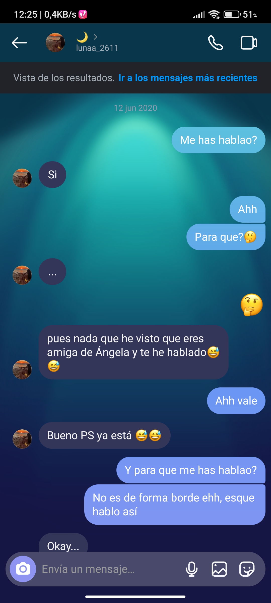

12 de Junio 2020: primera conversación, he tenido que tirarme más de 2h buscándola, pero aquí está, es una anécdota graciosa ya que Pablito se metió en la ducha antes de contestar, al salir el mensaje ya no estaba y le habló a Ángela preguntándole, ella le dijo que le preguntara a Lunita y ahí fue el a preguntar. Por ese entonces Pablito tenía una forma de hablar diferente, y parecía borde, pero en realidad no lo era y Lunita se pensaba que Pablito no quería hablar con ella por esas formas de contestar, una prueba es la siguiente:
Pd: Lunita ya llamaba AMIGA a Pablito, era ya un buen paso...
25 de Noviembre 2020: Un día antes del cumpleaños de Lunita, quedaron para ir a su plaza, esa plaza tan bonita y que tantos recuerdos tienen, como tik toks, tonterías, pasaron lluvias también y se llevaban pañuelos para secar sus bancos... Pero bueno, que me voy del tema, ese día fue un paso muy importante, ya que nadie sabía que pasaría al despedirse, en el mismo sitio de despedida de siempre, ocurrió algo inédito, el primer "beso" entre comillas porque fue pico, pero bueno, mejor que nada era ¿no?, ambos se fueron felices, por lo menos yo no me lo creía, habíamos dado un gran paso, por como éramos, tan vergonzosos. Ese día fue uno de los más felices de mi vida, entrené con mucha fuerza, aunque no paraba de pensar en lo que pasó y también estaba empanado.
26 de Noviembre 20201: cumpleaños de Lunita en el cual Pablito le hizo un vídeo y no salió como esperaba, primero porque no se subió el vídeo cuando se tenía que subir, logró subirlo 1h más tarde, y segundo, porque Lunita quería matar a Pablito, ¿por qué? por las fotos que puso y las dimensiones que tenían.